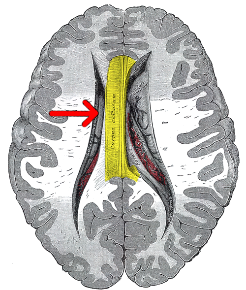
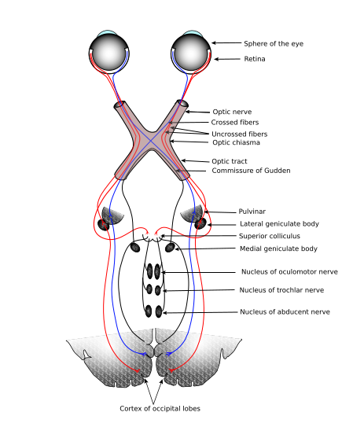
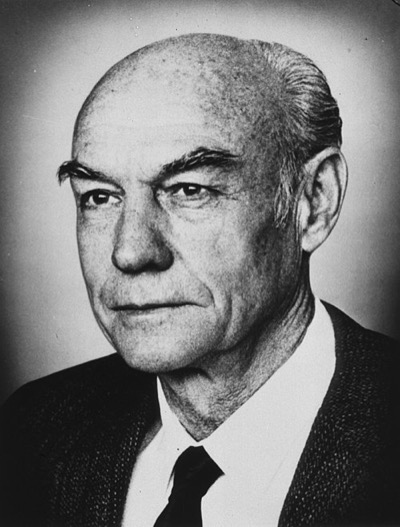
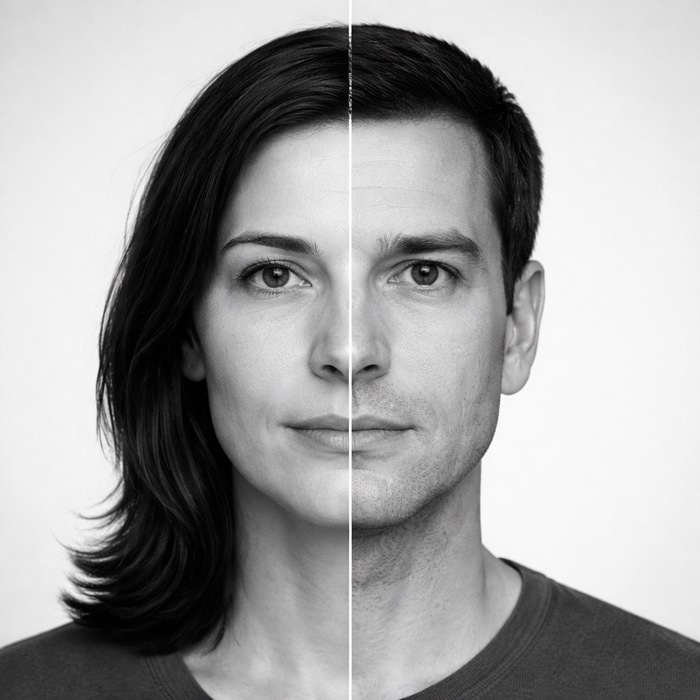

Special Report / 脳と意識
脳梁を切った患者に、左視野にだけカギを見せる。彼は「何も見えなかった」と言う。そしてその直後、左手がテーブルの上のカギを、迷わず指す。1962年、スペリーたちはそれを世界に見せた。
ガザニガ、ボーゲン、スペリーが最初の分離脳論文を発表。脳梁切断後の患者では、左右の半球が別々の情報を処理していることが実験的に示された。
1962年。キューバ危機で世界は核戦争の一歩手前に立ち、ジョン・グレンが米国人初の地球周回飛行を終えた年。
左脳と右脳は普段脳梁という太い束でつながり、情報を共有している。これを切るとどうなるか——その答えが、意識そのものの像を揺さぶった。
ふと笑った直後、「なんで笑ったの?」と聞かれる。説明しようとすると、本当の理由ではない気がする何かを、それらしく口が先に並べはじめる。
私たちは、自分がなぜそうしたのかを、たぶん本当には知らない。事後に、それっぽい物語を当てはめて、つじつまを合わせている。
その作業が、目に見える形で剥き出しになる場所がある。脳の中を物理的に二つに分けた、半世紀前のある手術室である。
脳を縦に二つに分けた人たちは、右手で書く文字と、左手で描く絵が、違う世界を指すことがあった。それが「私は一人なのか」という問いに、生きた答えを突きつけた。
人間の大脳は、中央の縦の溝(大脳縦裂)によって左右の半球に分かれている。その二つを底でつなぎ止めているのが、約2億本の神経線維の束——脳梁脳梁(corpus callosum)
左右の大脳半球を橋渡しする神経線維の束。ヒトでは厚さ約1cm、約2億本のニューロンが交差する。哺乳類のなかでも特に発達している。である。普段の私たちが、左手で触れたものを右手で説明でき、右視野の字を左側の空間感覚と重ねられるのは、脳梁を通って情報が瞬時に共有されているからだ。

図1 / 上方から見た大脳の解剖学的切断図(脳の上部を除去して内部を露出したもの)。中央を縦に走る黄色に着色された部位が脳梁——左右半球を繋ぐ約2億本の神経線維の束。両側の黒い空洞は側脳室。出典: Henry Vandyke Carter, Gray's Anatomy Plate 737 (1918, Public Domain)
だが、1940年代から、この脳梁を意図的に切断する手術がごくまれに行われてきた。難治性てんかんの治療である。片側の半球で起きた異常発火が、脳梁を伝って反対側に広がり、全般発作に発展する——ならば、その橋を焼き落としてしまえば、発作は片側に閉じ込められる。1940年、ニューヨーク州ロチェスターのウィリアム・ヴァン・ワゲネンが、世界で初めてヒトの脳梁を切った。発作は実際に抑えられた。そして奇妙なことに、患者はほぼ普通に生活していた。料理も会話も仕事も、外からは以前と変わって見えなかった。
20年以上、その「普通さ」が研究者を戸惑わせ続けた。これほど太いケーブルを切って、なぜ何も起きないのか。この問いに最初に鋭く切り込んだのが、Caltechのロジャー・スペリーと、その大学院生マイケル・ガザニガ、そして神経外科医ジョセフ・ボーゲンの3人だった。彼らは、1961年末に手術を受けたW.J.という元パラシュート兵の患者に、前例のない実験設定を持ち込んだ。鍵は、左右の視野である。

図2 / 視神経は視交叉(optic chiasm)で鼻側の繊維だけが交差する。結果として左視野の情報は右半球へ、右視野の情報は左半球へ届く。固視点さえ動かなければ、片側の脳だけに情報を閉じ込められる。出典: Gray's Anatomy Plate 722, SVG 版 by KDS444 (Public Domain)
視神経は視交叉視交叉(optic chiasm)
左右の視神経が脳の底で交差する場所。各網膜の鼻側半分の繊維だけがここで反対側へ渡り、結果として左視野の情報は右半球へ、右視野の情報は左半球へ集められる。で半分ずつ交差する。この解剖学的事実から、奇妙な帰結が導かれる——固視点さえ動かさず、ほんの一瞬(150ミリ秒ほど)片側の視野にだけ何かを映せば、その情報は片側の半球にだけ届く。普通の人なら、すぐに脳梁を通って反対側へ渡る。だが脳梁が切られていれば、情報はそこで止まる。片方の半球には届かない。話してもらえば、口を動かすのは左半球だ。左視野に見せたカギは、右半球の中に孤立する。本人は「何も見えませんでした」と言う。そして左手を動かしてもらうと、右半球が操る左手が、テーブルの上のカギを、正確に指す。
図3 / 同じ刺激(左視野に一瞬のカギ)に対する、脳梁が通じている脳と切断された脳の応答。言葉を司る左半球(L)には情報が届かないまま、右半球(R)が制御する左手だけが「見た」と振る舞う。脳のアウトラインは CC0 の SVG Repo 素材を加工。
| 課題 | 左半球 | 右半球 |
|---|---|---|
| 言語産出 | 文字を読む、口で答える、文法を操作する | 基本的にできない(単語の理解は一部可) |
| 空間把握 | 苦手。積木で立方体を再現するのが下手 | 得意。地図のルート、立体の回転が速い |
| 顔認識 | 特徴の分析(目、鼻、口の記述) | 全体としての顔の同定が速く正確 |
| 感情認知 | 言語化・ラベル付け | 表情・声の抑揚から直接読み取る |
| 計算・論理 | 段階的な推論、記号操作 | 直感的な数量比較 |
ここで注意しておくと、「左脳=論理、右脳=芸術」という俗説は、こうした非対称性を劇的に誇張したものだ。健常者の日常のあらゆる活動では、両半球は脳梁を介して常に連動している。分離脳の実験が見せるのは、性格の型ではなく、強制的に一方の半球だけに仕事をさせたときの偏りである。

ロジャー・スペリー
Roger W. Sperry, 1913–1994
米国の神経心理学者。カリフォルニア工科大学で分離脳研究を主導し、1981年ノーベル生理学・医学賞を受賞。もともと両生類の視神経再生の研究から始まり、化学親和性仮説で神経回路の特異性を示したのち、脳梁切断患者へと関心を広げた。晩年は「意識は脳過程から現れる因果的実体」という、還元主義への抵抗を貫いた。
この三人は、役割がまったく違った。スペリーは理論家であり、分離脳の現象を意識という哲学的問題にまで引き上げた人物だ。ガザニガは実験の設計者であり、のちに「左脳解釈者」という独自の理論を築く。そしてボーゲンは、メスを握った当事者だった。
マイケル・ガザニガ
Michael S. Gazzaniga, 1939–
スペリーの大学院生として、1961年にW.J.への最初の実験を実施。以後60年以上にわたって分離脳研究を牽引し、「左脳解釈者解釈者(interpreter)
ガザニガが提唱した概念。左半球にあり、右半球や身体が行った行動を事後に観察し、それを整合的な物語として語り直す機能。分離脳だけでなく、健常者の日常の自己説明にも働いていると考えられている。理論」を提唱した。認知神経科学(cognitive neuroscience)という分野名そのものの提案者でもある。著書『The Social Brain』『Who's in Charge?』などで一般読者にもこの話を届けてきた。
ジョゼフ・ボーゲン
Joseph E. Bogen, 1926–2005
ロサンゼルスの神経外科医。フィリップ・ヴォーゲルとともに、てんかん治療として脳梁切断術を本格的に復活させ、W.J.の手術を執刀した。外科医でありながらスペリーたちと共著で論文を書き、患者の術後を長く見守り続けた。「二つの意識」という表現を早くから公の場で使った研究者でもある。
三人の仕事が積み上がった先に、スペリーは1968年の論文で一つの結論を書いた。分離脳の専門家でなくとも、引用せずにはいられない一文である。
"Each hemisphere seems to have its own separate and private sensations; its own perceptions; its own concepts; and its own impulses to act… In short, each seems to have a mind of its own."
それぞれの半球は、自分だけの感覚、自分だけの知覚、自分だけの概念、自分だけの行動衝動を持っているように見える……要するに、それぞれが自分の「心」を持っているようなのだ。
— Roger W. Sperry, "Hemisphere deconnection and unity in conscious awareness"(1968)
この言葉は衝撃的だった。そして衝撃的な主張は、しばしば歪められる。分離脳の知見は、科学の外に出たとたん、いくつかの頑固な誤解を生んだ。テレビ番組は「右脳型性格診断」を作り、ビジネス書は「左脳で考えよう」と書いた。実際はどうなのか、三つだけ確認しておく。
よくある誤解
「左脳人間/右脳人間」があり、性格がそのどちらかに傾いている。
実際は
健常者の脳は常に両半球が連動しており、個人の性格や能力は「どちらが優位か」では説明できない。半球差は、分離脳や脳損傷という強制状態でだけ前景に出る現象だ。
よくある誤解
脳梁を切ると、日常生活が明らかに破綻する。
実際は
外から見る限り、分離脳の患者はほぼ普通に生活し、会話も仕事もこなす。異常は、視野を一側だけにコントロールする実験設定でしか現れない。この「普通さ」こそが、意識の問題を余計に難しくしている。
よくある誤解
分離脳の中には、二人の別人格が宿っている。
実際は
そう解釈したくなる現象が並ぶのは確かだ。だが2017年以降、「意識は一つ、知覚だけが二つに分かれる」という別の読み方が強力な候補として台頭している。どちらが正しいかは、まだ決着していない。
ここからは、あなたが実験者の席に座る。1962年、Caltech。目の前には、前年末に脳梁を切断した元パラシュート兵、W.J.がいる——スペリーとガザニガが最初に実験した、あの患者だ。設定と応答の内容は、実際の論文に記録された結果に基づくシミュレーションである。
操作はシンプル。中央の赤い「+」を固視点として、W.J. の左右の視野に別々の刺激を提示する。そのあと、彼に口で答えさせるか、左手で指させるか——実験者であるあなたが選ぶ。フェーズが進むごとに、口と左手のズレがどこまで広がるか、そして最後、彼の左脳が知らないはずのことについて何を「語る」かを、目の前で確かめてほしい。
鍵は、最後のフェーズだ。そこで起きていることは、W.J. の脳の中だけの話ではないかもしれない。
フェーズ④まで進めた人には、奇妙な実感が残ったかもしれない。W.J. の左脳は、自分が選んでいないものに対しても、堂々と理由を述べた。しかもその理由に嘘をついている自覚はなかった——本当にそう信じていた。ガザニガが追いかけ続けたのは、この奇妙さである。
さきほどフェーズ④であなたが体験したのが、まさにこの実験である。1970年代、ガザニガが実際に行ったのもほぼ同じ手続きだった。左視野(=右脳)に雪の風景、右視野(=左脳)に鶏の足。左手がシャベルを、右手が鶏を選ぶところまでは、あなたが見たとおりだ。ここからは、その実験をガザニガがどう読み解いたか、順を追って見ていきたい。
問題は、カードを選んだあとだ。「なぜその二つを?」と口で訊いたとき——答えるのは、話すのを司る左半球だ。ところが左半球は、左手がどんな映像を見て雪かき用のシャベルを選んだのか、知らない。雪の風景は右半球の中に閉じ込められ、脳梁は切られている。では左半球は「わからない」と黙るだろうか。黙らない。即座に、自信たっぷりに、こう答える。
図4 / ガザニガの鶏/雪景色実験。左手(右脳)は「雪かき」としてシャベルを選ぶ。だが口(左脳)は、雪の風景を見ていないまま、自分が知っている情報だけを使って辻褄の合う物語を組み立てる。
「鶏の足を見たので鶏を選びました。シャベルは鶏小屋を掃除するのに必要だから」——これが、左脳解釈者の実例である。雪の風景を見ていない左脳は、目の前の手がかり(自分が見た鶏の足と、左手が選んだシャベル)だけを使い、両者を一つの物語に押し込めている。辻褄は合っている。本人に嘘をついている感覚はない。ただ、それは実際に起きたこととは違う。
ガザニガはこの現象を、分離脳だけの特殊現象ではなく、ふつうの脳の日常動作だと考えた。私たちの左半球は、右半球や身体や無意識から流れてくる行動や情動を、常に事後に観察し、それを自分の行動として語り直している。なぜ笑ったのか、なぜ買ったのか、なぜその人を選んだのか——即座に出てくる「理由」は、原因ではない。原因はもう起きた後で、そこに遅れて貼られるラベルである。
もう一歩踏み込んだ実験
ガザニガとルドゥは1970年代後半、患者 P.S. の左視野(=右半球)にだけ、"stand up"(立ち上がれ)と書かれた紙を提示した。P.S. は立ち上がった。そこで訊く——「なぜ立ち上がったんですか?」その指示を見ていないのは左半球だ。それでも彼は即答した。
「ああ、ちょっと伸びをしたくて」。
視覚刺激の食い違いだけではない。自分の身体が起こした行動そのものすら、左半球は事後に物語として仕立て上げる。解釈者の射程は「見たもの」を越えて、「自分がしたこと」にまで及んでいる。
"The left hemisphere did not say 'I don't know,' which truly was the correct answer. It made up a post hoc answer that fit the situation. It confabulated."
左半球は「わからない」とは言わなかった——それが本当は正しい答えだったのに。状況に合う後づけの答えを作り上げ、辻褄を合わせてしまった。
— Michael S. Gazzaniga, Who's in Charge? Free Will and the Science of the Brain (2011)
フェーズ③で触れた、もう一つの有名な実験——1972年のキメラ図形である。レヴィ、トレヴァーセン、スペリーは、左半分と右半分が別人の顔である合成画像を分離脳の患者に見せた。中央の「+」を固視させると、左半分(=女性)の情報は右半球へ、右半分(=男性)の情報は左半球へ届く。あなたはすでに、患者が口で「男性の顔でした」と答えた直後に、左手で迷わず女性の顔を指す場面を目撃している。ここでは、その奇妙さを改めて情報の流れとして追ってみたい。
図5 / レヴィ、トレヴァーセン、スペリー(1972)のキメラ図形実験。中央の「+」を固視させて150ms だけ合成顔を呈示すると、左視野の女性側は右半球へ、右視野の男性側は左半球へ入り、そこで止まる。同一画像に対して、口と左手は別の顔を報告する。しかも本人に「矛盾を感じた」という自覚はない。顔画像は生成AIによるイラスト。
患者は、自分の口が「男性だった」と言ったことと、自分の左手が「女性」を指したことのどちらも不自然に感じない。どちらも、本人にとっては一つの出来事である。矛盾に気づかない——なぜなら、左半球はそれぞれの時点で、目の前で起きていることに対する整合的な物語を即座に生成してしまうからだ。
1940
初のヒト脳梁切断(ヴァン・ワゲネン)
ロチェスターの神経外科医ウィリアム・ヴァン・ワゲネンが、てんかん治療として初めてヒトの脳梁を切断。発作は抑制されたが、術後の認知への影響は限定的に見え、手術は長らく忘れられた。
1961
患者 W.J. の手術
フィリップ・ヴォーゲルとジョセフ・ボーゲンが、重度てんかんの元パラシュート兵W.J.に対して、脳梁・前交連・海馬交連までを切断する徹底的な離断術を施行。
1962
最初の分離脳論文(ガザニガ、ボーゲン、スペリー)
"Some functional effects of sectioning the cerebral commissures in man"(PNAS)。左右半球が別々の情報処理を行うという驚くべき結果が、実験的に初めて示された。
1968
"Hemisphere deconnection and unity in conscious awareness"
スペリーがAmerican Psychologist誌で、分離脳研究から意識の単一性へ問いを拡張。引用されることの多い「それぞれの半球が自分の心を持っているようだ」という記述はこの論文。
1972
キメラ図形実験(レヴィ、トレヴァーセン、スペリー)
Brain誌。半分女性・半分男性の合成顔を用い、同じ刺激に対して「指さし」と「口頭報告」で異なる答えが返るという、知覚の二重性を鮮やかに示した。
1981
スペリー、ノーベル生理学・医学賞受賞
「大脳半球の機能的特殊化の発見」に対して。受賞講演で、スペリーは意識を脳過程の因果的実体として再定義する主張を展開し、物理主義への抵抗を明確にした。
2005
ガザニガ『Forty-five years of split-brain research』
Nature Reviews Neuroscience誌の総説で、分離脳研究の蓄積を振り返り、解釈者モジュール仮説がヒトの日常認知にまで適用可能であると主張。
2017
ピントらの反論「意識は一つ、知覚が二つ」
ヤイア・ピント(アムステルダム大学)らがBrain誌で、完全脳梁切断の患者でも応答モードを問わず全視野の刺激を認識できる、と報告。「分離脳は意識を分割しない」というテーゼで、スペリー/ガザニガ的な二意識モデルに正面から挑戦した。
2017年、オランダのヤイア・ピントらは、完全に脳梁を切断されたはずの患者2名を、従来よりも広い応答様式で再検査した。古典的な実験では、左視野の刺激に対する答えは「左手の指さし」でしか拾われていなかった。ピントらはそこに、口頭報告、右手の指さし、視野の一致/不一致の明示的判断などを重ねた。結果、患者たちは応答モードを問わず、視野全体の刺激に気づいていた。
そこからピントらが導いた結論は、こうだ——分離脳の中で分裂しているのは知覚であって、意識の主体ではない。二つの半球はそれぞれ独立に情報処理を続けているが、それを経験しているのは一人の意識主体である。この「conscious unity, split perception」モデルは、既存の意識理論(特にグローバル・ワークスペース理論のように、統合が脳梁や皮質間通信に依存するとする立場)に深刻な課題を突きつけている。
"This model asserts that a split brain produces one conscious agent who experiences two parallel, unintegrated streams of information."
分離された脳が生み出すのは、一人の意識主体だ——ただしその一人が、統合されない二つの並行する情報の流れを経験している。
— Yair Pinto, Edward H.F. de Haan, Victor A.F. Lamme, "The Split-Brain Phenomenon Revisited: A Single Conscious Agent with Split Perception," Trends in Cognitive Sciences (2017)
議論は決着していない。ガザニガの陣営はピントらの実験手続きを批判し、応答に「cross-cueing」(片側の半球が、視線や体の位置、微かな手の動きを手がかりに反対側の半球に情報を渡す現象)が混入した可能性を指摘している。ピントらはそれを認めつつ、cross-cueingだけでは結果全体を説明できないと反論する。論争は今も続いている。
私たちが分離脳の話から持ち帰るべきなのは、「意識が二つになる」という衝撃的な結論そのものではないのかもしれない。むしろ核は、左脳解釈者のほうだ。物理的に切られなくても、私たちの自己意識は、右半球や身体や無意識のあちこちで起きていることを、後追いで一本の物語に縫い合わせている。そしてその縫い目の見えないよさが、「私は続いている」という感覚の正体なのかもしれない。
作品への登場
Dr. Strangelove(1964)
スタンリー・キューブリックの映画。ピーター・セラーズ演じるストレンジラヴ博士の右手が、本人の意思に逆らってナチス式敬礼をしたり、自分の喉を絞めたりする。医学文献では、この描写は後のエイリアンハンド症候群の最も有名な文化表象とされ、「Dr. Strangelove症候群」という別称も提案されている。
Me, Myself & Irene(2000)
ジム・キャリーの主演コメディ。解離性同一性障害を題材にした戯画ではあるが、「同じ身体の中に別の意思が宿る」という分離脳的モチーフが色濃く漂う。90年代のアメリカ文化が、分離脳というイメージをどう咀嚼したかを映す一本。
Evil Dead II(1987)
Sam Raimi監督のホラーで、主人公の右手が独立して悪意を持ち、自分に襲いかかる。最終的に主人公は自分で自分の腕を切り落とす。身体の一部が「他者」に変わるという想像力は、分離脳研究が科学の側で扱おうとしたものと、鏡のように対応している。
最後に、ひとつだけ。

あなたがいま見ているのは、一枚の顔だ。女性と男性が不自然に繋ぎ合わされた、どこか居心地の悪い一枚。けれどそれは、脳梁が瞬時に左右の情報を縫い合わせてくれているから。
1972年、同じ画像を見せられた W.J. は違った。彼に口で訊けば「男性の顔でした」と答え、そのあと左手で「いま見た顔」を写真から選ばせると、迷わず女性の顔を指した。
同じ画像、二つの答え、ひとりの患者。
この奇妙さだけ、持ち帰ってほしい。
画像は生成AIによるイラスト(レヴィら 1972 の実験手法を再現したもの)
Some functional effects of sectioning the cerebral commissures in man
分離脳研究の出発点となった論文。患者W.J.に対する最初の実験報告。
Hemisphere deconnection and unity in conscious awareness
分離脳現象を意識の問題へと拡張したスペリーの代表論考。「それぞれの半球が自分の心を持つ」の引用元。
Perception of bilateral chimeric figures following hemispheric deconnexion
半分女性・半分男性の合成顔を用いた古典実験。応答モードで異なる「顔」が報告されることを示した。
Forty-five years of split-brain research and still going strong
分離脳研究の総説。解釈者モジュール理論を含め、半世紀の蓄積を整理した読みやすい入門。
Split brain: divided perception but undivided consciousness
「分離脳は意識を分割しない」という大胆な再検証。既存の意識理論への重大な挑戦として議論が続いている。